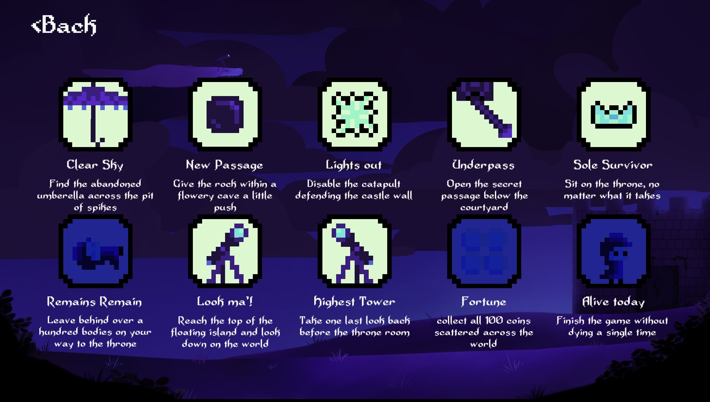

Skills
C++
The great majority of my experience with C++ comes from working on university assignments. I have worked with creating game applications following the principles of object-oriented programming using simple frameworks based on C++. Using SFML has taught me how to work with vast external libraries and use their potential to create independent applications. I am well familiar with the syntax and find myself fully comfortable in working with the language.A video from one of the Software Engineering for Games assignments. The top-down shooter has been developed with object oriented C++ utilised with the SFML framework.
You can find the details of the project in the Education section.
You can find the details of the project in the Education section.
C#
My experience in working with C# comes mainly from the Unity engine. I have used it to develop 2D, 3D and VR games. The things that i have made in the language include a complete dialogue system, responsive enemy AI that can provide a significant challange to the player and a large number of UI and core elements such as save and achievement systems.AI for the enemies as well as all combat mechanics have been done using C# and Unity engine's built-in functions, along with an extra pathfinding addon.
You can find the details of the project in the Crystale game page.
You can find the details of the project in the Crystale game page.

Achievement system for Carcasscade has been made with C#, and functions along with the regular save system, utilising a binary encoder to save player's progress.
Unity
I have experience in developing a good variety of games in Unity, ranging from 2D platformers, to VR experiences. I have started to work with the engine before going to the university, and it was my first introduction into game development. Since i have used many extensions to fully utilise the power of the engine, and have worked with level design, UI systems, NPC AI, and more.Dialogue system made in Unity, utilized in a 3D game. More details about the project will be released soon.
World design for Carcasscade, done using the Unity tilemap editior.
Unreal Engine 4/5
I have experience working in Unreal Engine, both solo, and in a team. I have done university work with it that involved reworking an existing application to expand its features. More importantly, i have developed a game in Unreal Engine 5 during the Global Game Jam 2023. I was one of the two programmers involved in the project, and handled player movement with the use of combined C++ and Blueprint.Moving targets and a weapon swapping system has been added to the shooting range.
You can find the details of the project in the Education section.
You can find the details of the project in the Education section.
Player in Sunflower Tower moves along a set path with the use of splines, creating a 2.5D platformer.
HTML/CSS
I have experience in designing simple websites with the use of HTML and CSS, with the invaluable help of Bootstrap. This very website serves as an example of my abilities, besides the use of a Bootstrap theme, I have designed it and all the sections entirely by myself. I don’t consider myself to be a great designer, but I have tried my absolute best to ensure all sections are clear and easy to access.PHP
My knowledge in PHP comes mainly from university work, as well as time spent designing websites in my personal time. The original concept of my portfolio website was dynamically genearted using the template provided by the university. From the university i have learned how to create a login system, as well as how to manage user accounts with a simple data base. From my pesonal experience i have learned how to utilise PHP with the addition of SQL. That being said, my knowledge in SQL is far from sufficient enough to be listed as a separate skill.
Screenshot from the dynamically generated website done for the university coursework.
You can find the details of the project in the Education section.
You can find the details of the project in the Education section.
Python
Python was the first programming language that I’ve learned, quite a common case in recent years. Initially I was using it for developing simple text games, but more recently I returned to it and started working on a project with Discord API. I have developed a bot for the Discord platform. I am confident in using this language, mainly through developing simple object-oriented applications that handle data from Json files.You can find the details about the bot i have developed in Python on the Projects page.